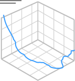

A propos
(current)
Florian Cosse
Mes projets
Profil altimétrique entre deux points
Import d'un MNT pour réaliser des profils altimétriques semis-automatisés.
Isochrone et API Openrouteservice
Utilisation de l'API d'openrouteserivce pour la carographie d'isochrone.
Visualisation de données météos
Analyses de données météos faites avec Pandas.
Dash, Plotly et énergie
Utilisation d'un CSV pour faire une carte avec Dash et Plotly.
Occupation du sol d'OSM
Import des données de landuse d'OpenStreetMap pour afficher leur répartition dans un diagramme circulaire

Tracé 3D de cours d'eau
Import d'un MNT et d'une couche vecteur pour réaliser un tracé.